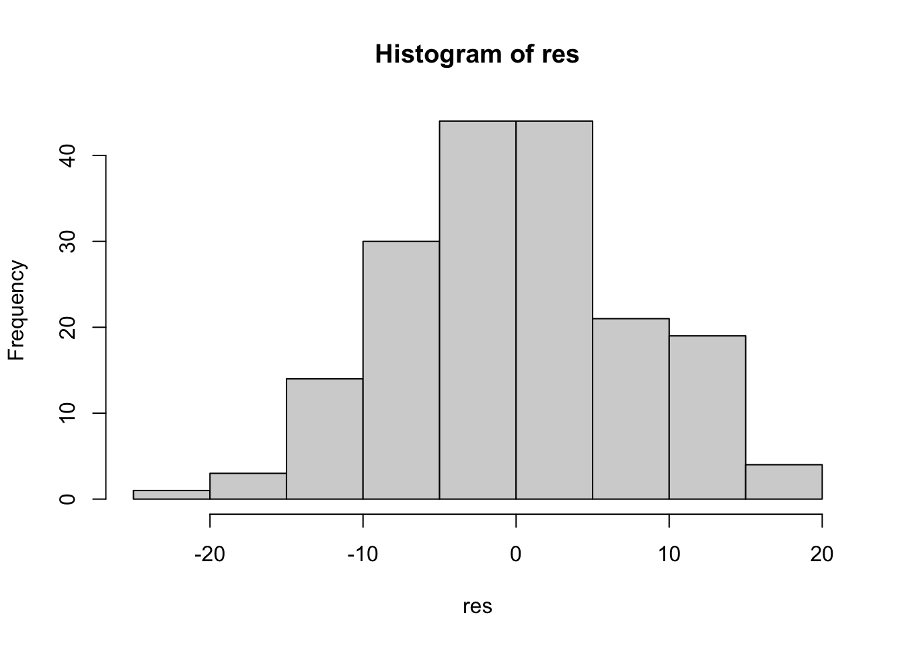
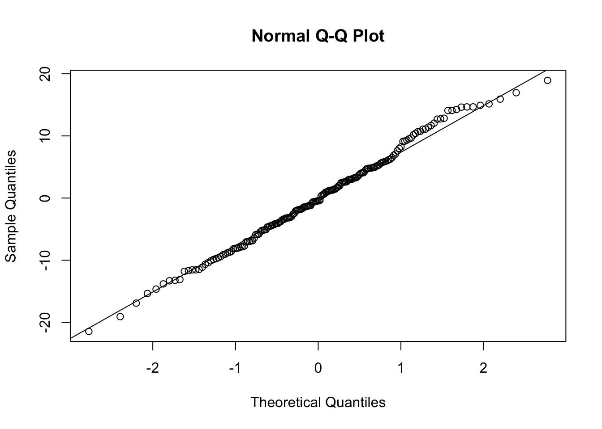

library(readr)
library(ggplot2)
library(tidyverse)
library(skimr)
#install.packages("car") # remove the first "#" and then run the line
library(car)
#install.packages("afex") # remove the first "#" and then run the line
#used with package for ANOVA
library(afex)
#install.packages("emmeans") # remove the first "#" and then run the line
#used this package to evaluate where means were statistically significant
library(emmeans)
#Used this package for ANOVA
library(rstatix)Mixed ANOVA
Section Overview
In the following lab, we review how to apply a mixed analysis of variance (ANOVA) with two factors: a within-subjects factor that measures changes over time within individuals and a between-subjects factor that identifies differences based on group/treatment/condition characteristics and how to evaluate their interaction. A mixed model ANOVA tests whether each of the three effects—the two main effects and the interaction effect—is statistically significant. Using a study that reviews current large language model (LLM) chatbots for workplace therapy (Yuan et al. 2025), we will evaluate differences in workplace burnout pre- and post-therapeutic approach, including hypothetical LLM chatbots and in-person therapy.
Study Overview
In the following study we are going to explore the effectiveness of two different mental health therapeutic approaches to reduce feelings of workplace burnout in 60 employees over time. Specifically, the between-subjects factor includes a 30 minute session with Rubi (TxR) an LLM chat bot or in-person therapy (TxInP). The within-subjects factor of reported workplace burnout is measured at the beginning of the therapy (T1), midway through the therapy (T2), and “at discharge (T3).
Hypothesis
- Inteaction \[H_0 =\] There is no significant interaction between therapeutic approach and time conditions on reported levels of workplace burnout.
\[H_A =\] There is a significant interaction between therapeutic approach and time conditions on reported levels of workplace burnout.
- Within Subjects Main Effect
\[H_0 = T_{1burnout} = T_{2burnout} = T_{3burnout}\] There are no mean differences in employees reported workplace burnout across time.
\[H_A = T_{1burnout} \neq T_{2burnout} \neq T_{3burnout}\] There are mean differences in employees reported workplace burnout across time.
- Between Subjects Main Effect
\[H_0 = T_{TxRubi} = T_{TxInP} \] There are no mean differences in employees reported workplace burnout based on therapeutic approach.
\[H_A = Tx_{Rubi} \neq Tx_{InP} \] There are mean differences in employees reported workplace burnout based on therapeutic approach.
Packages
Data Exploration
Always take a look and explore the data before moving on to analyzing the data.
#this is me reading in the data
burnout <- read_csv("burnout.csv")
#this is me removing column 1
burnout <- burnout[, -1]
#review the data using skimR
skim(burnout) | Name | burnout |
| Number of rows | 180 |
| Number of columns | 4 |
| _______________________ | |
| Column type frequency: | |
| character | 2 |
| numeric | 2 |
| ________________________ | |
| Group variables | None |
Variable type: character
| skim_variable | n_missing | complete_rate | min | max | empty | n_unique | whitespace |
|---|---|---|---|---|---|---|---|
| treatment | 0 | 1 | 4 | 17 | 0 | 2 | 0 |
| time | 0 | 1 | 2 | 2 | 0 | 3 | 0 |
Variable type: numeric
| skim_variable | n_missing | complete_rate | mean | sd | p0 | p25 | p50 | p75 | p100 | hist |
|---|---|---|---|---|---|---|---|---|---|---|
| id | 0 | 1 | 30.50 | 17.37 | 1.00 | 15.75 | 30.50 | 45.25 | 60.00 | ▇▇▇▇▇ |
| burnout | 0 | 1 | 64.58 | 10.11 | 30.28 | 57.65 | 65.99 | 70.91 | 87.35 | ▁▂▆▇▂ |
#This is me looking at the burnout by treatment and and time for data exploration purpose
burnout_data_long %>%
group_by(treatment, time) %>%
summarise(
mean_burnout = mean(burnout),
sd_burnout = sd(burnout),
.groups = "drop")# A tibble: 6 × 4
treatment time mean_burnout sd_burnout
<fct> <fct> <dbl> <dbl>
1 in_person_therapy T1 71.4 6.68
2 in_person_therapy T2 65.7 6.76
3 in_person_therapy T3 51.7 9.23
4 rubi T1 69.6 7.85
5 rubi T2 64.5 8.32
6 rubi T3 64.5 8.86Assumptions
Independence of Observations
Observations are only assigned to one treatment group.
There is no statistical approach to determine if this assumption is met. Understanding the study design is key. Make sure that each participant belongs to one group.
Normality of Residuals
Residuals represent the variance that is not explained by the model. The difference between the line of best fit and the actual data or the difference between the predicted values and actual data.
We want to ensure that residuals are normally distributed. Meeting this assumptions provides some confidence that our p-value and confidence intervals are accurate. When this assumptions is not met we could end up making a type 1 error. This is sometimes referred to as noise.
We can evaluate residuals by running an linear model, saving residuals and then plotting those residuals.
# Extract residuals (approximate approach)
res <- residuals(lm(burnout ~ treatment * time, data = burnout))
# Histogram
hist(res)
# Q-Q plot (make sure to run these two lines of code together)
qqnorm(res)
qqline(res)
Homogeneity of variance
Suggests that the variance should be equal across treatment groups. Each group will have their own mean, but the variation among subjects around their group means should be the same.
If one group has large variance, that group can contribute to larger residuals or more noise left to be explained by the model.
If this assumption is not met we could inflate type 1 error.
We can use the Levene’s Test of equal variance:
the null (p > .05) suggests that variances are equal. The assumption of homogeneity of variance is met.
the alternative (p < .05) at least one group has different variances. The assumption of homogeneity of variance is not met. However, if not met know that ANOVA is robust when we have equal sample size.
# Use the levene test
leveneTest(burnout ~ treatment, data = burnout_data_long)Levene's Test for Homogeneity of Variance (center = median)
Df F value Pr(>F)
group 1 3.8797 0.05043 .
178
---
Signif. codes: 0 '***' 0.001 '**' 0.01 '*' 0.05 '.' 0.1 ' ' 1Sphericity and Mixed ANOVA
Variance of differences between time points should be equal. Meeting the assumption of sphericity is crucial. Its the comparison of time points variances to one another.
If the difference in variances between pairs of time points are different, then there is a higher chance of type one error and bias in findings.
We can evaluate Mauchly’s Test of Sphercity. Variances are equal if Mauchly’s test is not significant (p > .05).
- If the test is significant (p < .05), the variances are not equal (The assumption of Sphericity is not met) and we should use either Greenhouse-Gaisser or Huynh-Feldt approach to deal with the violation.
We can run a mixed ANOVA using aov-ez (there are others: exANOVA, anova_test), which will provide Mauchly’s test
- Automatically, will deal with sphericity.
- Results will provide main effects and interaction
#Use the aov_ex to run a mixed ANOVA
# set the id, dv, and between and within factors
anova_model <- aov_ez(
id = "id",
dv = "burnout",
between = "treatment",
within = "time",
data = burnout_data_long
)Contrasts set to contr.sum for the following variables: treatmentanova_modelAnova Table (Type 3 tests)
Response: burnout
Effect df MSE F ges p.value
1 treatment 1, 58 163.92 2.96 + .042 .091
2 time 1.57, 91.31 18.12 161.90 *** .293 <.001
3 treatment:time 1.57, 91.31 18.12 71.65 *** .155 <.001
---
Signif. codes: 0 '***' 0.001 '**' 0.01 '*' 0.05 '+' 0.1 ' ' 1
Sphericity correction method: GG We can see that Greenhouse-Gaisser (GG) was used to deal with Sphericity.
We can see that there is a significant interaction. So we need to follow up with comparisons using the emmeans function, which will compare the treatment conditions (rubi vs. in-person) across time.
#another way to run Mixed ANOVA
burnout_data_long %>%
anova_test(dv = burnout, wid = id, within = time, between = treatment)ANOVA Table (type II tests)
$ANOVA
Effect DFn DFd F p p<.05 ges
1 treatment 1 58 2.957 9.10e-02 0.042
2 time 2 116 161.901 2.69e-34 * 0.293
3 treatment:time 2 116 71.653 5.46e-21 * 0.155
$`Mauchly's Test for Sphericity`
Effect W p p<.05
1 time 0.73 0.000125 *
2 treatment:time 0.73 0.000125 *
$`Sphericity Corrections`
Effect GGe DF[GG] p[GG] p[GG]<.05 HFe DF[HF]
1 time 0.787 1.57, 91.31 1.51e-27 * 0.805 1.61, 93.42
2 treatment:time 0.787 1.57, 91.31 4.77e-17 * 0.805 1.61, 93.42
p[HF] p[HF]<.05
1 3.99e-28 *
2 2.20e-17 *#this is me using the emmeans function to evaluate mean differences across condition and time
emmeans(anova_model, pairwise ~ treatment | time)$emmeans
time = T1:
treatment emmean SE df lower.CL upper.CL
in_person_therapy 71.4 1.33 58 68.8 74.1
rubi 69.6 1.33 58 67.0 72.3
time = T2:
treatment emmean SE df lower.CL upper.CL
in_person_therapy 65.7 1.38 58 62.9 68.4
rubi 64.5 1.38 58 61.7 67.3
time = T3:
treatment emmean SE df lower.CL upper.CL
in_person_therapy 51.7 1.65 58 48.4 55.0
rubi 64.5 1.65 58 61.2 67.9
Confidence level used: 0.95
$contrasts
time = T1:
contrast estimate SE df t.ratio p.value
in_person_therapy - rubi 1.80 1.88 58 0.958 0.3418
time = T2:
contrast estimate SE df t.ratio p.value
in_person_therapy - rubi 1.16 1.96 58 0.591 0.5568
time = T3:
contrast estimate SE df t.ratio p.value
in_person_therapy - rubi -12.81 2.34 58 -5.483 <0.0001Example Write up
A mixed-design ANOVA was conducted to investigate the effects of mental health therapeutic approaches, Rubi versus in-person therapy, and time on workplace burnout.
Prior to evaluation of inteaction of main effects assumptions were evaluated. Mauchly’s test indicated that the assumption of sphericity was violated, χ²(df) = 0.73, p < .05; therefore, Greenhouse–Geisser corrected results are reported.
Results suggest that there was a statistically significant interaction affects between treatment and time with an \(F(1.57, 91.31) = 71.653, p <. 05\). At T3, the in-person therapy group reported substantially lower burnout (M = 51.7, SD = 9.22) compared to the rubi group (M = 64.5, SD = 8.86).
References
Yuan, Aijia, Edlin Garcia Colato, Bernice Pescosolido, Hyunju Song, and Sagar Samtani. 2025. “Improving Workplace Well-Being in Modern Organizations: A Review of Large Language Model-Based Mental Health Chatbots.” ACM Transactions on Management Information Systems 16 (1): 1–26. https://doi.org/10.1145/3701041.